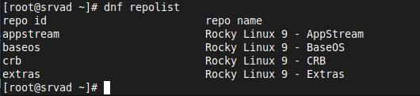

Samba AD-DC2 Replicador
Samba AD-DC Controlador Domínio (DC2) Replicador DC1
Vamos configurar a Segunda máquina para agir como um Replicador do DC1 (backup).
OBS: Seu DC1 deve neste momento estar operacional e funcionando corretamente. Antes de continuar, faça esta verificação.
Iniciando o processo:
Execute Update e Upgrade do sistema:
Execute um update e um upgrade do sistema com o comando abaixo:
dnf update -y && dnf upgrade -y
Instale o nano e o wget
Instale o editor de textos nano e a ferramenta wget com o comando:
dnf install -y nano wget
Verifique a rede
Verifique sua configuração de rede. O DNS deve ser PREFERENCIALMENTE o IP do Controlador de domínio (DC1), bem como nome de domínio e um IP fixo. Uma das opções para configurar a rede, é executar o comando nmtui que abre uma GUI no terminal:
nmtui
Selecione Editar uma conexão
Então a opção Editar
Verifique ou altere seu endereço ip, máscara de sub-rede e seu Gateway
Na opção Servidor DNS insira PREFERENCIALMENTE o ip de seu Controlador de Domínio Principal (DC1)
Não esqueça de inserir em Domínios de pesquisa: seu.domínio.
Vá até o fim e selecione OK para salvar.
Selecione Voltar e então no menu, selecionar a opção:
Definir nome de máquina do sistema: dc2.seu.dominio.
Agora selecione a opção: OK para salvar. Novamente selecione OK. Deve retornar para o terminal.
Edite o arquivo /etc/hosts
Com o editor de textos nano edite o arquivo /etc/hosts com o comando:
nano /etc/hosts
Insira os dados referentes ao seu Controlador de Domínio DC2:
127.0.0.1 localhost localhost.localdomain localhost4 localhost4.localdomain4
::1 localhost localhost.localdomain localhost6 localhost6.localdomain6
# insira os dados de seu MEMBRO DE DOMÍNIO
10.1.1.38 dc2 dc2.seu.dominio
Salve o arquivo
Para salvar: control+o e para sair: control+x
Onde:
10.1.1.38 = IP de seu DC2
dc2 = nome curto do host do DC2
dc2.seu.domínio = nome curto de seu host + seu domínio
Algum Samba rodando
Verifique se existe algum processo do samba rodando com o comando:
ps ax | egrep "samba|smbd|nmbd|winbindd"
Remova qualquer configuração smb.conf que houver, checando com o comando:
smbd -b | grep "CONFIGFILE"
# o resultado deve ser parecido com a linha abaixo:
-bash: smbd: command not found
Remova o arquivo /etc/krb5.conf
Remova o arquivo /etc/krb5.conf se houver, com o comando:
rm /etc/krb5.conf -y
Instale os repositórios de Plugins CRB e Epel
Instale os plugins e habilite o repositório CRB. Instale também o repositório epel release e execute um update com os comandos abaixo:
dnf config-manager --enable crb && dnf install epel-release -y && dnf update -y
Cheque os repositórios adicionados com o comando:
dnf repolist
O resultado deve ser algo como:

Setar servidor NTP (horário):
Liste as opções de hora local com o comando:
timedatectl list-timezones
Para setar o timezone desejado, use o comando:
timedatectl set-timezone America/Sao_Paulo
Verifique o timezone setado com o comando:
timedatectl
O resultado deve parecer como abaixo:
Local time: qua 2023-04-12 09:04:22 -03
Universal time: qua 2023-04-12 12:04:22 UTC
RTC time: qua 2023-04-12 12:00:16
Time zone: America/Sao_Paulo (-03, -0300)
System clock synchronized: yes
NTP service: active
RTC in local TZ: no
Instale dependências necessárias
Instale as dependências necessárias para compilar e instalar o samba. Crie um arquivo do tipo script executável e insira os comandos no arquivo. No terminal, execute o editor de textos nano com o nome desejado do arquivo por exemplo:
nano depende.sh
Copie e Cole as linhas abaixo para o seu arquivo:
set -xueo pipefail
dnf install -y yum-utils
dnf update -y
yum install -y \
gcc.x86_64 \
krb5-workstation.x86_64 \
tar \
bind \
bind-utils \
python3-devel \
wget \
nano \
perl.x86_64 perl-Parse-Yapp.noarch \
libacl.x86_64 \
nfs4-acl-tools.x86_64 \
gnutls-devel.x86_64 \
zlib.x86_64 \
krb5-devel.x86_64 \
krb5-server \
libblkid.x86_64 \
dbus-devel.x86_64 \
jansson-devel.x86_64 \
readline.x86_64 \
bsdtar.x86_64 \
docbook-dtds.noarch \
pam-devel \
cups \
python3-markdown \
patchutils.x86_64 \
gpgme-devel \
flex \
python3-iso8601.noarch \
python3-cryptography.x86_64 \
python3.11-devel.x86_64 \
lmdb.x86_64 \
libarchive-devel \
libacl-devel \
openldap-devel \
python3-dns \
perl-Convert-ASN1.noarch \
rpcgen.x86_64 \
perl-App-cpanminus \
popt-devel.x86_64 \
zlib-devel.x86_64 \
lmdb-devel.x86_64 \
bison-devel.x86_64 \
libtasn1-tools \
bison \
perl-JSON \
bzip2-devel \
openssl-devel \
yum autoremove -y
yum clean all
Salve o arquivo:
Para salvar: control+o e para sair: control+x
Transforme o arquivo criado em um arquivo executável com o comando:
chmod +x depende.sh
Execute o arquivo para que o mesmo instale as dependências necessárias. Utilize o comando:
./depende.sh
Download do Samba (4.19.5)
Faça o download do samba ou da versão desejada, utilizando o comando:
wget https://download.samba.org/pub/samba/stable/samba-4.19.5.tar.gz
Descompacte o arquivo utilizando o comando:
tar -zxvf samba-nome-arquivo
Mude para o diretório onde o arquivo foi descompactado com o comando:
cd samba-nome-arquivo/
Compilar o Samba
Compile o samba e faça com que o arquivo de configuação (smb.conf) seja gravado no diretório /etc/samba/smb.conf com o comando:
./configure --sysconfdir=/etc/samba/
Aguarde o procedimento terminar.
Comandos make e make install
Execute os comandos make e make install:
make && make install
Este processo pode ser demorado, aguarde até finalizar!
Mude para o diretório /root e edite o arquivo .bash_profile para que o comando samba-tool possa ser executado de qualquer diretório. Execute os comandos:
cd /root
nano .bash_profile
E insira a linha:
# User specific environment and startup programs
PATH=$PATH:$HOME/bin
#ESTA LINHA:
PATH=/usr/local/samba/bin/:/usr/local/samba/sbin/:$PATH
export PATH
Salve o arquivo
Para salvar: control+o e para sair: control+x
Serviço Systemd Samba
Crie um arquivo de serviço systemd para o Samba. Mas antes execute os comandos:
systemctl mask smbd nmbd winbind
systemctl disable smbd nmbd winbind
Crie o arquivo de serviço do samba-ad-dc com o editor de texto nano. Execute o comando:
nano /etc/systemd/system/samba-ad-dc.service
Copie e cole o conteúdo para seu arquivo:
[Unit]
Description=Samba Active Directory Domain Controller
After=network.target remote-fs.target nss-lookup.target
[Service]
Type=forking
ExecStart=/usr/local/samba/sbin/samba -D
PIDFile=/usr/local/samba/var/run/samba.pid
ExecReload=/bin/kill -HUP $MAINPID
[Install]
WantedBy=multi-user.target
Salve o arquivo
Para salvar: control+o e para sair: control+x
Recarregue o systemd
Recarregue o systemd com o comando:
systemctl daemon-reload
Habilite o samba-ad-dc para iniciar no boot do sistema:
systemctl enable samba-ad-dc
Configure o Firewall
Adicione os seguintes serviços no firewall, com o comando abaixo:
firewall-cmd --add-service={dns,ldap,ldaps,kerberos}
Abra as portas TCP utilizadas pelo samba:
firewall-cmd --permanent --zone=public --add-port={53/tcp,135/tcp,139/tcp,389/tcp,445/tcp,465/tcp,636/tcp,3268/tcp,3269/tcp,49152-65535/tcp};
Abra as portas UDP utilizadas pelo samba:
firewall-cmd --permanent --zone=public --add-port={88/udp,123/udp,137/udp,138/udp,389/udp,464/udp};
Recarregue o Firewall com o comando:
firewall-cmd --reload
Desabilite o SELinux
Edite o arquivo /etc/selinux/config com o comando:
nano /etc/selinux/config
Encontre a linha e altere para a opção disabled como mostra abaixo:
# disabled - No SELinux policy is loaded.
SELINUX=disabled
Salve o arquivo:
Para salvar: control+o e para sair control+x
Reboot o sistema
Execute um reboot com o comando:
reboot
Execute o comando samba
Quando o sistema reiniciar execute o comando samba
samba
Junte-se (join AD) ao Controlador de Domínio (AD-DC)
Execute o comando abaixo para juntar-se ao Active Directory (DC1) a partir de seu Controlador de Domínio (DC2). Substitua: seu.domínio para seu cenário:
samba-tool domain join seu.dominio DC -Uadministrator --realm=seu.dominio
Ao final do processo, na última linha deve mostrar: Joined domain seu.dominio como mostra na figura abaixo:
Com o comando acima seu Controlador de Domínio DC2 deve juntar-se ao DC1 (Seu Controlador de Domínio PRINCIPAL).